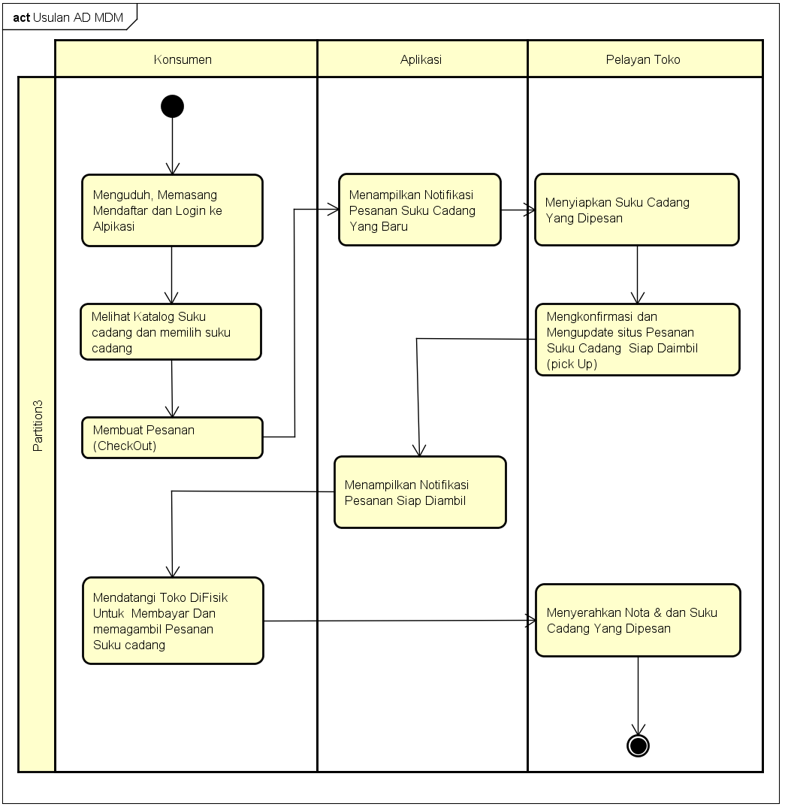

| Nim | : | 1811500086 |
| Nama | : | Muhammad Dafi Mahendra |
| Kelompok | : | TI6A |
Saduran Atau Rangkuman Saya pada Pertemuan ke-tiga yaitu :
- Pembahasan pemasalahan atau Solusi kelanjutan untuk alalisa sistem usulan
- Cari solusi yang dibuat pada Kegiatan atau Activity untuk ke aplikasi
- Membuat sistem yang menghemat waktu bagi pemilik dan konsumen !
- Memperkecil kesalahan pada data yang dimasukan atau dikeluarkan !
- Mempercepat dan Mempermudah Traksaksi ketika berbasis Android
- Analisa Proses Bisnis Sistem Usulan
- Admin Sebagai Pemegang Pemasaran Berbasis Web
- Admin Pengelolah data Pesanan dan suku cadang
- Konsumen sebagai pengguna Aplikasi Berbasis Android untuk melakukan pemilihan dan pembelian
-
- Membuat Activity Diagram Usulan Sistem
- Analisis Sistem Berjalan terkait dengan Proses yang di analisa pada suatu toko
- Membuat Activty Diagram Usulan Dengan Tambahan aplikasi
Pekerjaan File Astah : Download
Image/ Foto Dari Pekerjaan Yang Dibuat
